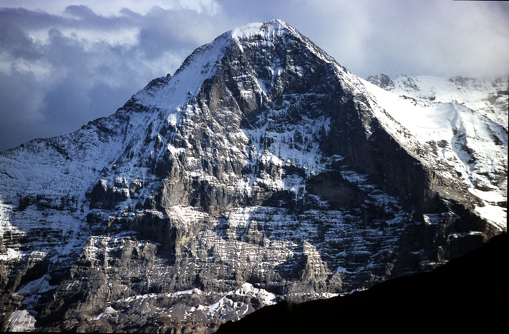

Words by Zoey Poll, Published on February 24th, 2020 by AIGA Eye on Design
The first three dimensions—length, height, and depth—are included on all topographical maps. The “fourth dimension,” or time, is also available on the website of the Swiss Federal Office of Topography (Swisstopo). In the “Journey Through Time,” a timeline displays 175 years of the country’s cartographic history, advancing in increments of 5-10 years. Over the course of two minutes, Switzerland is drawn and redrawn with increasing precision: inky shapes take on hard edges, blues and browns appear after the turn of the century, and in 2016, the letters drop their serifs. Watching a single place evolve over time reveals small histories and granular inconsistencies. Train stations and airports are built, a gunpowder factory disappears for the length of the Cold War. But on certain maps, in Switzerland’s more remote regions, there is also, curiously, a spider, a a man's face, a naked woman, a hiker, a fish, and a marmot. These barely-perceptible apparitions aren’t mistakes, but rather illustrations hidden by the official cartographers at Swisstopo in defiance of their mandate “to reconstitute reality.” Maps published by Swisstopo undergo a rigorous proofreading process, so to find an illicit drawing means that the cartographer has outsmarted his colleagues. It also implies that the mapmaker has openly violated his commitment to accuracy, risking professional repercussions on account of an alpine rodent. No cartographer has been fired over these drawings, but then again, most were only discovered once their author had already left. (Many mapmakers timed the publication of their drawing to coincide with their retirement.) Over half of the known illustrations have been removed. The latest, the marmot drawing, was discovered by Swisstopo in 2016 and is likely to be eliminated from the next official map of Switzerland by next year. As the spokesperson for Swisstopo told me, “Creativity has no place on these maps.”
Errors—both accidental and deliberate—are not uncommon in map s(17th-century California as an island, the omission of Seattle in a 1960s AAA map). Military censors have long transformed nuclear bunkers into nondescript warehouses and routinely pixelate satellite images of sensitive sites. Many maps also contain intentional errors to trap would-be copyright violators. The work of recording reality is particularly vulnerable to plagiarism: if a cartographer is suspected of copying another’s work, he can simply claim to be duplicating the real world— ideally, the two should be the same. Mapmakers often rely on fictitious streets, typically no longer than a block, to differentiate their accounts of the truth (Oxygen Street in Edinburgh, for example).
But there is another, less institutional reason to hide something in a map. According to Lorenz Hurni, professor of cartography at ETH Zurich, these illustrations are part inside joke, part coping mechanism. Cartographers are “quite meticulous, really high-precision people,” he says. Their entire professional life is spent at the magnification level of a postage stamp . To sustain this kind of concentration, Hurni suspects that they eventually “look for something to break out of their daily routine.” The satisfaction of these illustrations comes from their transgressive nature— the labor and secrecy required to conceal one of these visual puns. And some of them enjoy remarkable longevity. The naked woman drawing, for example, remained hidden for almost sixty years in the municipality of Egg, in northern Switzerland. Her relatively understated shape was composed in 1958 from a swath of green countryside and the blue line of a river, her knees bending at the curve in the stream. She remained unnoticed, reclining peacefully, until 2012.
Several of the other drawings came about considerably later. In 1980, a Swisstopo cartographer traced the spider over an arachnid-shaped ice field on the Eiger Mountain . It faded out over the course of the decade, retracting its spindly legs in the intermediary editions. Around the same time, another cartographer concealed a freshwater fish in a French nature preserve along the Swiss border. The fish lived in the blue circumference of a marshy lake until 1989 when, according to Swisstopo, “it disappeared from the surface of the lake, diving to the depths.” It’s unclear how these drawings made it past the institute’s proofreaders in the first place. They may have been inserted only after the maps were approved, when cartographers are asked to apply the proofreaders’ final edits. When the maps were once printed as composite layers of different colors, cartographers could have built the drawings from the interplay of different topographical elements (the naked woman, for example, is composed of a blue line over a green-shaded area). Hurni also speculates that cartographers could have partitioned their illustrations over the corners of four separate map sheets, although no such example has (yet) been found.
Some of these clandestine drawings allude to actual topographical features: near the town of Interlaken, where an outcropping of stones approximates two eyes and a nose , the 1980 edition of the map features an angular cartoon face between the trees. (According to local legend, it’s a monk who was turned to stone as punishment for chasing a young girl off the cliff.) In the late 1990s, the same cartographer drew a hiker in the map’s margins. With boots each about the size of a house, the hiker serves a pragmatic purpose. Like a kind of topographic patch, he covers an area in the Italian Alps where the Swiss apparently lacked the necessary “information and data from the Italian geographical services.”
The marmot, the latest illustration, hides in plain sight in the Swiss Alps. His plump outline was concealed in the delicate relief shading above a glacier, which shielded him from detection for nearly five years. The mountain’s hachures— short, parallel lines that indicate the angle and orientation of a slope— double as his fur. He is mostly indistinguishable from the surrounding rock, except for his face, tail, and paws. He even fits ecologically: as an animal of the ice age, alpine marmot are comfortable at high altitudes, burrowing into frozen rock for their nine months of hibernation. In 2016, Hurni revealed his location to the public on behalf of an unnamed source. There is a degree of winking tolerance for these drawings, which constitute something of an unofficial national tradition: the spokeswoman for Swisstopo referred me to a 1901 fish hidden in a well-known painting of Lake Lucerne at the National Council palace (probably in honor of the palace’s April 1st inauguration, which some European countries celebrate by attaching "April Fish" to the backs of shirts). Nevertheless, the marmot—along with the face and hiker —will likely be “eliminated” from Switzerland’s next official map (per a decision from the chief of cartography).
Swiss cartographers have a longstanding reputation for topographical rigor. A so-called “Seven Years War of Cartography” was even waged in the 1920s over the scale of the national maps, with the Swiss Alpine Club advocating greater topographical detail for its mountaineering members. Swisstopo is now an industry benchmark for the mountains, from its use of aerial photogrammetry (images taken first by balloons and then small planes) to aerial perspective (that natural haziness that renders distant peaks with less contrast). In 1988, they were commissioned to draw Mount Everest. Still, the original drawings were never authorized in the first place. Perhaps a meticulous reading of next year’s Swiss maps may reveal some other nationally-celebrated animals in unfrequented bodies of water or alpine meadows. As Juerg Gilgen, a current cartographer at Swisstopo, told me “as a matter of fact, the proof-reader is also just a human being prone to failure. And cartographers are also just human beings trying to fool around.”